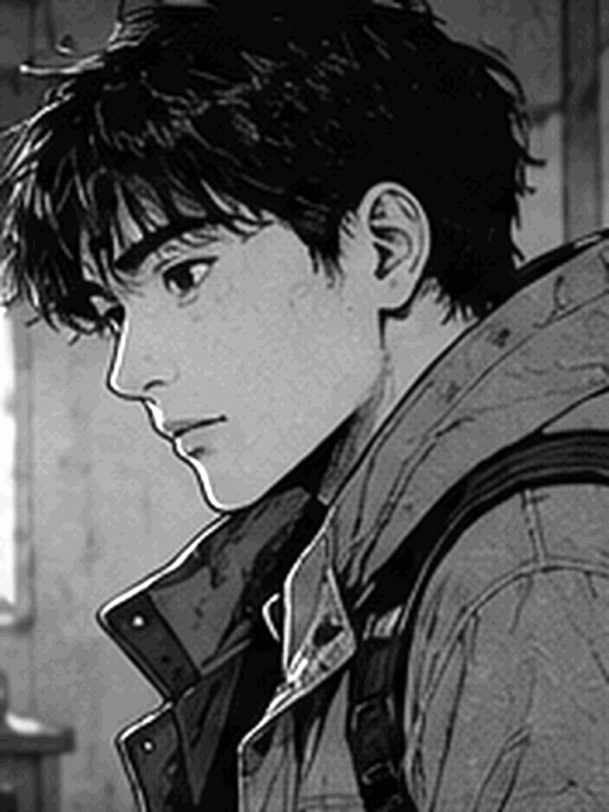
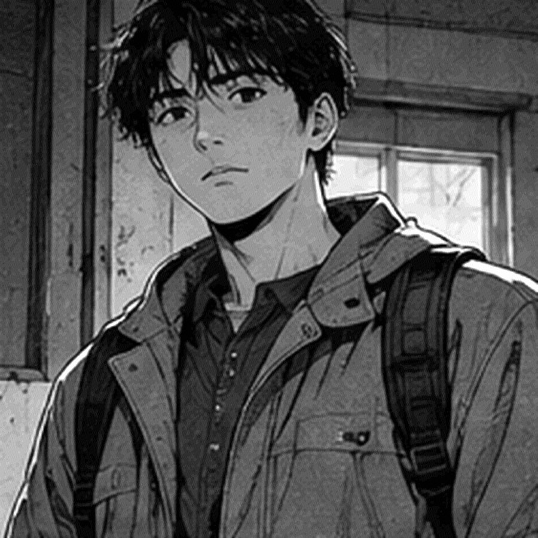

临时睡人的地方
页脚还能拼出“低龄组暂移活动室，折叠床另记”，后半截墨色已经和水痕黏在一起，只剩几个分不清偏旁的黑点。
2007.8.18 停用
涉及儿童福利机构、暴雨事故、短暂哭泣与成年人工作失误；不含血腥画面，也没有依赖惊吓跳脸推进的段落。
可用键盘完成全部操作，谜题没有倒计时；全程无音乐，所有关键信息都能直接从文字中获得。

他们把第一只箱子挪过门槛时，雨势才猛地密起来；门厅玻璃很快蒙上一层白气，锁眼里那截发硬的胶带被水光照得发亮。欧阳澈只试了一次钥匙便收回封口袋，顺手在清点页角落写下时间——20:08。
周野：“九点锁门，是吧？”
欧阳澈：“物业说九点半，算上搬箱子已经没剩多少时间……你手里那只别拖，纸底一散，今晚还得蹲这儿捡。”
周野：“我都来给你搬箱子了，还嫌我拖？”
沈知禾：“你俩要吵就边搬边吵，窗边那两箱先给我——底已经湿透一角，再放五分钟就要散。”
桌边三只旧纸箱挤在一起：A 箱贴着“学校接收”，B 箱留给维修和拆除队，C 箱的去向栏还是空的；潮气把箱盖熏得发软，边角一碰就往里卷，周野抱起最上面那只时还掉下一小片湿纸皮。
欧阳澈咬着笔帽，把箱号、去向和经手人一格格补好；周野伸手想接本子，他下意识往回让了半寸。这个动作太熟，周野连手都没收，只挑了下眉——大学做社团展览时欧阳澈就这样，谁动过哪一摞底片，他第二天都记得。
周野：“你现在连进门几点都要记？”
欧阳澈：“省得回头再互相问是谁先碰过哪只箱子，写下来总比靠脑子硬记强。”

活动室在二层东侧。从门厅沿北侧内梯上楼，再绕半段连廊，院里的秋千架正好落在窗下，雨水顺着铁链一节节往下滴；活动室门槛比走廊高半级，门一推开，墙脚那圈褪色瓷砖便显出一层返潮的白霜。沈知禾摸了摸墙根，把纸箱往屋心挪开一掌宽，指腹离开时沾下一点湿灰。
沈知禾：“这面墙还在返潮，纸箱离它远点……周野，你脚边那张凳子别再踢了，已经只剩三条腿肯干活。”
欧阳澈低头核箱号，余光里靠窗那张折叠床忽然白得扎眼，像有人刚铺好床单，连金属床脚都泛着新亮；等他抬头看清，那里只有一层发硬的旧帆布，灰积得很厚，靠墙一角还塌下去一块。
欧阳澈没有马上叫人，只朝窗边走近两步，雨水贴着玻璃往下爬，那层刺眼的白已经没了；旧帆布仍陷在床架中央，褶子里全是灰，仿佛刚才那一眼只是水光把黑白颠倒了一瞬。
周野：“你盯着那张床看半天了，刚才有什么？”
欧阳澈：“刚才像有人把床铺好了……再看又只剩旧帆布，多半是窗外那阵反光。”
柜顶还粘着几颗纸折的五角星，胶已经黄透，星角一律往下耷；沈知禾认出其中一颗折的是旧作业纸，背面露出半道没擦干净的竖式，她没有去揭，只用指节碰了碰柜门，确认里面还有东西。
墙边挤着三张矮凳，其中一张凳腿缠过铁丝；周野鞋尖蹭过去，凳子晃得厉害，他赶紧用膝盖顶住，嘴里那句“对不起”差点脱口而出，又自己咽了回去。
周野：“这里以前是不是临时睡过人？”
沈知禾：“像是，柜底还有借用簿……你往旁边让半步，刚好把窗光挡严实了。”
周野：“那拍下来？”
沈知禾没接话，翻到借用簿中段时却停了一下；纸边擦过木板，簌地落下一层灰，底下还压着半张点名纸。
柜子底层还压着一本薄薄的借用簿，封皮画满铅笔印；周野翻到中间，发现记录的不是玩具，而是谁借走了蜡笔、剪刀、胶水——有几页会在名字后面多写一句：“别给她绿色，她会把整张纸涂满。”
周野：“这谁？”
欧阳澈只抄簿子标题，没碰那句“别给她绿色”；周野把簿子塞回去时，底下那半张低龄组点名纸顺着木板滑了出来，纸角正好停在他鞋尖前。
靠窗那排折叠床后来再没有变过；欧阳澈把相机举到一半又放下，沈知禾却在自己的便笺边缘写了一行很小的字——“窗光误认？”；最后那个问号在纸边停了几秒，她想了想，还是留在那里。
桌面还粘着一页受潮纸，揭的时候几乎和木纹一起起皮；标题勉强能认出是临时床位调整；正文已经被水泡散，只剩几处墨色浮在木纹和水渍之间，翻页时还会粘起一层纸纤维。
页脚还能拼出“低龄组暂移活动室，折叠床另记”，后半截墨色已经和水痕黏在一起，只剩几个分不清偏旁的黑点。
铁柜门只肯开半掌宽，空气里全是湿布和铁锈味；长桌一角还罩着发脆的塑料布，三个人先沿桌边看了一圈，确认没有积水，才开始挪上面的东西。
服装室比活动室冷得明显，靠墙铁柜锈得几乎打不开，长桌倒还稳；周野把发脆的塑料布卷到一边，一只掉瓷的白搪瓷盘从下面露出来，盘沿粘着几根已经发黑的棉线。
盘里压着几块白布，字被水晕得七零八落：有的只剩一个姓，有的只剩最后一笔；布边却都很整齐地留着剪口，像是被人集中处理过，而不是胡乱撕下来的。
塑料布卷到桌角以后，木面露出一圈比周围浅的圆印；盘边散着湿衣袋的蓝扎绳和两点剪刀锈，圆印、扎绳和剪刀的位置彼此挨得很近，像这张桌当晚一直被当成临时工作台。
白布签一共七块，大小并不整齐，剪口也不是同一种方向；唯一相同的是边缘都留着旧针脚，说明它们先从衣物上拆下来，之后还准备继续被使用。

周野：“网上那帖子说的就是这个？”
沈知禾：“帖子那张只拍了布签，你看下面——湿衣袋还在，旁边连收拢表都没挪走。”
欧阳澈在便签上写下位置和时间，写到“内容”一栏时，笔尖悬了几秒；他把原先落下的“姓名”两个字划掉，改成“旧布签若干”，余下那格空着。
铁柜里还塞着没拆包装的捐赠衣，110 到 150 的尺码混成一摞。最上面那包印着早已停业的商场名；周野抽出一件往自己身上比了比，又嫌弃地塞回去。
周野：“这颜色放到当年估计也没人抢着穿，我先声明不是我审美落后。”
沈知禾：“你来挑校服？”
桌脚旁的编织袋内壁结着一层泥，袋口用蓝色塑料绳随手打了两个结；袋子没有任何特殊标记，倒是边角夹着一张湿衣收拢表，纸边已经粘在纤维上。
欧阳澈：“库存领用是十八点三十四，剪裁条十八点四十一……”
周野：“也就是说，衣服已经发下去了，才开始剪？”
欧阳澈没马上回答，只把两张纸并到一起，指尖压住时间那一栏；周野凑过去看了一眼，嘴边那句追问又咽了回去，只把两张纸的位置让得更开。
长桌另一头有一本针线领用簿，页脚被剪掉一角；红线不是特殊物资，只是当年最耐拉的粗棉线；邹雪梅连续领过三个月，备注总是同一句：“缝厚布。”
沈知禾一口气往前翻了几页，三月、四月都有红色粗棉线，页边还沾着胶水和粉笔灰；她把簿子摊到周野面前，用指节敲了敲其中两行：“看见没？三月、四月都在领这种粗棉线，别光盯着它是红色就往怪谈上靠。”
周野：“行，我先把‘恐怖红线’四个字咽回去，免得以后翻记录还得看见自己丢人。”
沈知禾：“你先咽着，等真碰上解释不了的再起标题——到时候我不跟你抢署名。”
布边已经磨白，剪口里还卡着一小截暗红棉线；桌下那只编织袋散着潮味，蓝色扎绳被泥水染成了几乎看不出的灰。

寝室门只开了一条缝，周野用肩膀顶了两次才挤进去；门后没有箱子，也没有什么故意挡门的东西，只是一块翘起的地胶死死卡在门脚。他低头看了两秒，像是觉得刚才那股戒备有点丢脸。
周野：“我刚才真差点对一块地胶说‘借过’，还好你们俩都没回头看我。”
欧阳澈：“晚了，你刚才那两下肩撞得挺实，它要记仇也完全说得过去。”
靠窗第四张床没有床板，铁架上还挂着旧维修牌。沈知禾念到日期时停了停，随手又从床头柜夹层抽出夜间照护页。
沈知禾：“等一下，别按床号往下数——维修牌是当天上午，04床那时候已经停用。”
床头柜最下面压着一张值日表；乔乔负责收晾衣夹，阿成负责把喝水杯送去消毒，小满那一栏被人画了两次圈，旁边写“又忘”；周野看了半天，最后还是没忍住笑。
周野：“我九岁的时候连作业都经常忘在教室，更别说每天收晾衣夹这种事。”
欧阳澈：“你二十八也记不得还车钥匙，上周那把现在还在我抽屉里躺着。”
窗台里侧有一道铅笔线，旁边只写着“成 132”；欧阳澈没有抄进主表；沈知禾看了一眼刻线的位置，说这更像平时量身高留下的随手记号，并不属于当晚登记。
靠墙床头的旧纸签上，一行名字被水泡开，下面却还能看到“活动室折叠床”几个字。周野盯了半天，还是问了出来：
周野：“床在这里，为什么人写活动室？”
欧阳澈：“这页只写到一半……值班室要是还留着临调页，应该能把人对上。”
床下还有一本晚间小事本：谁把牙刷掉进水池、谁半夜踢被子、谁第二天要带作业去学校；很多字潦草得像边走边写，其中一页提到小满“睡前又问 04 床什么时候修好，她嫌活动室有人打呼”。
周野：“所以她知道自己不睡这儿？”
沈知禾：“是同一天——她晚上还在嫌活动室有人打呼，至少那时候她知道自己睡在哪儿。”
欧阳澈把小事本夹到维修单后面；两张纸不是同一人写的，日期却挨得很近。周野又看了一眼空着的04床，没再往床号上数人。
周野朝走廊尽头看了很久，话说到一半才收回去；那里没有脚步，也没有人影，只有门框下的一小滩水在反光。
周野把维修单递回来，手还没松，目光却先越过欧阳澈肩头落到门外；那一下停得太久，欧阳澈也跟着回了头。
欧阳澈：“你刚才一直看门外，那里有什么？”
周野：“没事……刚才门框那边像有人停了一下，等我再看就只剩那滩水。”
沈知禾顺着他的视线看了一眼，没有追出去，只把门往里拉了些；外面滴水声拖了很久，直到周野自己低头把维修单递回来。
04床只剩铁架，旁边那张维修牌的日期停在事故当天上午。

记录柜的锁早被人拆过，里面没有整册档案，只剩牛皮袋、散页和几张完全无关的报销单；欧阳澈把能读的纸按原来的折痕和日期摊开，周野刚伸手想帮，他已经用手背把那只手挡了回去。
周野：“你护这点顺序比护相机还认真，我只是抽张纸，又不是要给你改档案。”
欧阳澈：“你每次都喜欢从中间抽一张出来，我不重排，过十分钟自己都找不到原来的位置。”
沈知禾：“你俩有空斗嘴，不如先把窗关上——再吹两分钟，这几页真得粘成一本。”
三个人留下的交接笔记长度不一样；司徒琴的字最急，邹雪梅的字最慢，何秋芹中间有两行被水晕开；几张纸都提到“腕带”，但没有一张把事情从头写到尾。

同一个抽屉里还混着米面领用、消毒液补货和两张半年前的请假条；周野念到“牙疼，上午去医院”时笑了一声，欧阳澈没抬头，只沿着原来的折痕把那页塞回去——今晚用不上，可页角还带着原柜位编号；真扔了，下一轮清点反而没人知道它原本放哪。
周野：“你连没用的也排？”
欧阳澈：“照原来的箱号放，别因为现在看着没用就顺手塞到别处；后面有人补清点，找不到才是真麻烦。”
周野：“那你刚才还拍我手背，听着可不像欢迎我帮忙的意思。”
欧阳澈：“因为你会把请假条夹进交接本，还觉得自己帮了大忙。”
牛皮袋最里侧还夹着一张值班时间条，没有叙事，只记谁在什么时段负责哪一层；司徒琴从 18:30 起在活动室，邹雪梅负责洗衣房与后勤库，何秋芹带低龄组上楼后又返回活动室；三个人的纸，至少在空间上能同时成立。
周野把三张交接并在一起看了一遍，忽然把其中一张倒过来：“这张背面还有半句话。”
背面只剩半句：“……先别让她们回寝室”，前后都被水晕开，既没有主语，也没有留下姓名。
欧阳澈：“先夹回原来的位置——前后都泡没了，现在硬认是谁，只会把这半句越看越像答案。”
他们把最后一张交接夹回牛皮袋时，最下层抽屉自己滑出了一指宽；柜体没有明显倾斜，地面也算平整，抽屉那一下滑出来便显得格外没来由。周野伸手推回去，力气比平时轻，三个人谁都没问刚才有没有人碰过它。
一张写“孩子拿错腕带”，另一张写“布签发反”；欧阳澈把两页错开半寸，刚好能同时看见那两行字。周野盯了片刻，原本搭在抽屉边的手慢慢收了回去。

值班室只剩半扇窗还能合上，风一灌进来，桌角那几本儿童生活记录就自己翻页；电话线早被齐根剪掉，白板也拆走了，墙面只留下四颗排列过分整齐的固定螺丝。
欧阳澈把“林小满 / 二层”和“陈雨宁 / 活动室”两条腕带抄记写到纸上，旁边再抄《临时床位调整》：小满在活动室折叠床，豆豆在靠门观察位。
周野：“等会儿——豆豆到底是不是陈雨宁？”
周野说完自己先皱了下眉，拿手机备忘录搜了两遍“豆豆”；他打字太快，把“陈雨宁”输成“陈雨宇”，沈知禾扫到屏幕，没忍住笑了一下。

沈知禾先把“陈雨宁”当成另一个新入院的孩子，翻到下一页才皱起眉，把自己刚写的那行便签划掉。
沈知禾：“……我看错了，登记名陈雨宁，小名豆豆；两行写的是同一个人，刚才那张便签得划掉。”
桌上另一张分组便条写着：换衣后，低龄组先留活动室；需要重核的孩子不要回寝室拿东西；字旁边用铅笔画了两个空圈，没有填姓名。
欧阳澈：“名字没换……可这两个地点正好反着，像是缝的时候把两条临时位置拿颠倒了。”
周野：“所以不是把人叫错了，是把她们当晚待的地方写反了？”
沈知禾：“调床页给我，刚才那张便签作废——我把豆豆当成另一个新入院的孩子，前面那行得重写。”
窗台上有一只裂口搪瓷杯，杯底写着“值夜”；里面塞着四支早就干掉的圆珠笔；欧阳澈随手试了一支，笔尖只在纸边刮出一道发灰的浅痕，连墨珠都没挤出来。
周野拿走那支划不出字的笔，在掌心转了两圈，最后还是插回杯里；沈知禾看见他把笔又塞回杯里，只抬了下眼，没有拿这件小事逗他。

洗衣房的排水沟早堵死，地面却比别处干得反常；最里面挂着一件灰旧外套，布硬得像晒透的纸，工作台抽屉里则躺着半卷暗红棉线，颜色与服装室搪瓷盘里那截几乎一样。
周野：“红线、剪刀、名字……那帖子要是拍到这张桌，估计能再写两千字。”
沈知禾：“帖子只拍了半张桌，把这本领用簿也拍进去，红线大概就没那么唬人——可惜怪谈不会替你补上下半张。”
桌角压着两条临时腕带的抄记；不是实物，只有后勤人员把上面的字重新抄在纸上：姓名、临时地点、缝制时间。
两条腕带抄记并排摊在桌上，纸张比原来的布带保存得好；能确定的只有姓名、临时地点和缝制时间，针线本身没有留下任何“仪式”意味。
针线盒里有白线、黑线和半卷暗红线；红线最粗，缝厚布省事；邹雪梅后来在补记里写，她当晚手泡得发僵，针脚“难看得很”。
沈知禾：“照片里有腕带、有针线，就是没拍这几页领用记录。”
周野：“大概？”
沈知禾：“我只说多半——针线簿能证明东西在这里用过，却没写清那晚第一根针是谁拿的；那一格先空着，别硬往上填名字。”
那件灰外套的口袋里什么都没有；拉链坏了一半，袖口有一处补丁；周野说可以扔，欧阳澈说先别动；两个人谁也没解释为什么那件破外套值得留下，只把它重新塞回原位，动作出奇地一致。
针线柜最底层还有一张“返工”便条：两条腕带拆线后，旧线不要再用，重新缝；旁边写了一个极小的“乔”；沈知禾没有把这个字当作姓名，只在登记里写“疑似经手人简称”。
周野：“你们俩今晚说话怎么都留半截？”
欧阳澈：“你那句自己记，我的清点页只够放箱号和时间，再塞你的感想，今晚真得加班到锁门。”
这次沈知禾没接话，只把两条腕带抄记往临调页旁边推了半寸。
洗衣房没有开着的窗，挂在最里侧的灰外套却轻轻摆了一下；周野这回没接话，只抬手按住衣架，等它彻底停稳才松开。
剪刀搁在针线盒旁，线头打着很粗的结；桌板靠窗的一侧有一圈旧水印，除此以外没留下什么能把那晚重新讲一遍的东西。
交接页只写：“18:56，二名儿童暂留换衣桌，重新核对”，名字那一栏空着，纸边还粘着一截已经松散的红线头。

南楼梯是二层通往门厅的主楼梯，如今被木板封住——板子是拆除准备时后来钉的，旁边那条裂缝却老得多，从二层一路爬到半层平台。
欧阳澈把几张通行记录按时间排开：门厅水位简记写到 19:12，南楼梯维修页在 19:16 盖了“停用”，后门钥匙却到 19:18 才被借出；三张纸一前一后，把能走的方向压得只剩一条。
周野把三张时间纸并到一起，手指在19:16和19:18之间来回点了两次：“楼梯停了两分钟以后，后门钥匙才被拿走。”
欧阳澈：“对——十九点十八这张往后压，两分钟里楼梯已经不能走，后门反而开始有人拿钥匙。”
平台上倒着一辆旧拖把车，轮子早锈死了；十九年前的后勤通行说明特地写着“坡道可过送衣推车”；单看不重要，跟门厅水位、楼梯停用时间放在一起，能走的方向一下少了大半。
欧阳澈：“门厅的水还在涨，南楼梯又停了；十九点十六以后，哪一条还能让孩子和推车一起过？”
沈知禾：“钥匙十九点十八才借走，把这一张也压进来；前两分钟楼梯已经停了，这条时间不能丢。”
周野伸手试了试封板，木头只动了半厘米，他便把手收回来，没有继续逞强。
周野：“我今天只负责搬东西，不负责再给这栋楼添一张新的事故记录——这块板我不碰了。”
半层平台原先贴过疏散图，如今只剩一圈发黄胶痕。周野把手机举到一半，又垂下来：“一块空墙也拍？”欧阳澈已经按了快门：“回去不一定记得它空在哪儿。”
后勤补页还提到一件小事：19:22 以后送衣推车先推到坡道外，免得孩子经过时绊脚；邹雪梅在句尾重重写下“太滑”，墨迹比前面几行都深。
沈知禾：“‘太滑’不是写在疏散页上，而是写在移车条末尾——至少能说明那辆推车当晚确实走过坡道。”
周野：“这回总算有一条不用猜人名的，时间、钥匙、坡道三样都写得够清楚。”
后门钥匙平时不挂主钥匙板，而是单独留在洗衣房；事故当晚那一格写着 19:18，借用人是邹雪梅，归还时间后来才补。
记录柜最底层压着一只薄牛皮袋，封口已经失去黏性；里面只有四页纸，最上面是排版整齐的正式报告，后面三张全是手写，而且日期都比事故当晚晚。欧阳澈把它们摊开时，四张纸的干湿程度甚至不一样。
正式报告只有一句和腕带有关：“转移前完成二次核对，登记无误”
司徒琴的补记多了一行：“两条腕带曾发反，是乔乔先发现不对”；邹雪梅写得更直接：“湿布签都压在一个盘里，司徒琴拿的时候认错了两块。”

欧阳澈：“正式报告只剩‘二次核对无误’，前面那次写反没进去。”
沈知禾把补记和正式页压在一起比日期：“这张晚三天，这张又晚半天……不是一口气写完的，装订顺序也在后面。”
欧阳澈：“可前面那些时间能跟当晚交接一项项接上，至少这部分不是后来凭空编出来的。”
沈知禾没有立刻接话，只把页角翻到日期那面，指腹沿着装订孔慢慢压过去。
欧阳澈把正式报告放到最左边，又把三张手写补记推到右边；他想说“可报告就是没写”，话到一半又咽回去，沈知禾已经把旁边几个塑料夹按日期摊开，等他自己把两组纸放到一起。
欧阳澈：“正页先打印，补记才进袋……难怪前后读起来总像被人硬生生抽掉一截，中间那段根本没进正文。”
沈知禾：“日期都写在页角，不用猜先后；你把第三天和第四天那两张先分开。”
欧阳澈：“要是只看正式页，谁会知道中间写反过两条腕带？”
沈知禾：“嗯，流转条到‘归档’就断了，后头既没经手人，也没再写正文重排。”
周野朝门外看了一眼，雨还没停；他没接这句话，只把手机亮到桌面上——物业刚发来消息，问他们还要多久。
消息下面还压着外卖软件的提醒：那家面馆九点打烊。周野盯了两秒，默默把通知划掉；谁也没再提晚饭，提醒横在屏幕顶端亮了几秒，又自己暗下去。
牛皮袋封底还粘着一张装订流转条：第二天上午收材料，第三天下午打印正文；几张手写补记的日期更晚，最后只在边栏留下“补页归档”四个字。纸面干净得近乎刻意，谁也没有在边栏解释为什么正文定稿以后就没再重排，几张补记只被塞进了附页。
欧阳澈把几张纸的日期重新抄在便签边上，写完最后一个数字，笔尖停在空白处，没有再补解释。
沈知禾：“流转条写到‘正文已定’就停了，后面这格一直空着。”
周野：“你们俩今晚比档案柜还难撬，至少柜子多使点劲还会给我开一条缝。”
沈知禾：“挺好用的——你继续说，省得我们三个都盯着这几张纸不眨眼。”

物业的消息在桌边亮了一下：外门还有二十分钟。周野把空箱子踩平，纸板“咔”地折了一声；沈知禾已经把最后一摞纸装进塑料夹，欧阳澈的手却还停在下一只牛皮袋上，指尖悬了两秒，最终没有把那张来路不明的便签硬塞进去。
沈知禾：“先停一下，柜子再往下翻，也未必还能接到这一晚。”
欧阳澈：“我知道，这张是体育馆接收页，时间和经手人都得重新写，不能直接沿用前一张。”
周野：“你每次说‘知道’，通常都代表还要多拖五分钟——我已经开始怀疑这两个字是你的加班暗号。”
桌上只剩已经读过的材料，再没有新东西可翻；欧阳澈把便签摊开，重新按四个阶段分到桌面四角。
沈知禾把乔乔那张领鞋带的条子从主线材料里抽出去。
欧阳澈：“那个也有日期，而且还比这张早两小时，别一转手就把它塞进生活杂项。”
沈知禾：“这张只是下午领鞋带的条子，跟撤离没关系，放回生活杂项那一摞就行。”
周野：“可算有人治你了，我宣布这张领鞋带的小纸条今晚立了大功。”
欧阳澈这回没有争，把那张领鞋带的条子放回“生活杂项”，还顺手把压在下面的便签重新理平。桌面因此空出一大块，和事故当晚直接相关的材料不再被生活杂项压着，前后时间也一下显得清楚许多。
周野伸手去拿两张便签，手到一半又停住，等欧阳澈先点头。欧阳澈看见周野停下来的手，没说什么，只把那两张便签往他面前推了一点。
欧阳澈：“这两张你来排，左右顺序按时间走就行——还有，别把纸角折进去。”
周野：“你今天真让我碰你这摞东西？”
周野这回没再逗他，低头把纸摊平；欧阳澈原本压在桌角的手也慢慢松开。
欧阳澈：“快点，外门只剩那点时间；你要贫，等上车以后再慢慢贫。”
他把“红线”“剪刀”“两名儿童留下”“后门钥匙”分别写在四张小纸上，周野看了一眼：“你要是把它们单独发网上，明天又能多出一版鬼故事。”
欧阳澈没接这句话，只把四张便签朝中间推近；纸角互相压住以后，那几个词终于不再像四件彼此无关的事。
沈知禾把四张便签翻到背面，挨着原字迹添了四个小词：湿衣、身份、错配、通行。写到最后一个“行”字时笔尖断了墨，她甩了两下，干脆把笔横在欧阳澈手边。
门外的雨慢下来，屋檐只剩断断续续的滴水声。四张便签被推到桌中央，欧阳澈第一次没有伸手去重新排周野放过的位置。

雨水先从一层门缝钻进来，何秋芹把低龄组往楼上带，司徒琴守在楼梯口连数三遍；队伍已经拐过平台，小满还在最后面扭头找鞋，湿袜子踩得台阶一串深印。
司徒琴：“鞋先别管，小满，上去——先跟着前面的人！”
小满：“可那双不是我的，我的鞋有一边开线……”
司徒琴：“我知道，先跟着前面的人上去；等人都到了活动室，我再陪你回来找。”
库存衣从三楼储物间一摞摞搬下来，码数根本来不及细分；有人抱着衣服往活动室跑，有人蹲在地上拆湿鞋带，房间里几乎没有能空出来的桌面。湿衣被塞进编织袋以后，原本缝在衣服里的姓名布签也跟着离开了人；邹雪梅索性蹲在袋边，把还能辨认的那几块一一剪下。
邹雪梅：“干的往左，湿的进袋；别再按衣服认人，刚才两袋已经混过一次，再混就真对不上了。”
周围有人：“早就混了，刚才那袋连楼层都没扎绳，谁再按衣服认人，等会儿肯定还得返工。”
邹雪梅没再争，把还能辨字的布签一块块剪下来放进搪瓷盘；盘底刚擦干又积起薄薄一层水，墨迹沿着布纹慢慢洇开。
阿成：“邹姨，我那条膝盖破的裤子呢？”
邹雪梅：“哪条？你别光说名字，直接指给我看是哪一块，我现在眼睛都花了。”
阿成：“左边膝盖有个洞，前几天补过一次的那条；我自己的裤子我认得，不用看名字。”
邹雪梅：“那条已经湿透了，今天先穿别人的新裤子——别皱眉，明天再换回来。”
阿成低头捏了捏陌生裤脚，嘴唇动了一下；后面又有人递来一件湿外套，他只好先侧身把路让开。
布签离开湿衣以后，身份只能跟着腕带继续走；桌边的人忙着缝、抄、核对，谁都没把这件事当成值得留下照片的场面。
司徒琴把布签分给几个人；小满看见轮到自己，立刻把手藏到背后。
司徒琴：“手给我，别一直往袖子里藏；我缝松一点，等换完衣服你再嫌它难看。”
小满：“不要，它刚才就勒得疼，你再缝我还是会把它往袖子里藏。”
司徒琴：“我知道，我给你再松一点缝；要是还勒，你就直接说，别等到走路时才一边扯一边哭。”
邹雪梅：“你别先给她许什么时候能好，线还在我手里；真要拆了重来，至少还得再等一会儿。”
司徒琴：“所以你先把线递给我，别让她一直举着手等；后面还有几个孩子没换完。”
邹雪梅低头看见线团还攥在自己掌心，忍不住短促地笑了一声，把线递过去以后才继续分衣服。
18:56，乔乔没跟着其他孩子走，她站在换衣桌边盯着两条腕带看了好一会儿，先看小满，又看豆豆，最后才扯了扯司徒琴衣角。
乔乔：“司徒老师，这个地方写反了吧？”
司徒琴：“哪一条不对？你慢慢指，别一口气把三个人的名字都喊出来。”
乔乔把小满的手腕抬高，又指了指豆豆；司徒琴皱着眉翻过另一条布带，沉默了两秒才抬眼。
司徒琴：“你俩先坐这里，谁都别往寝室跑；何老师，把临调页拿来，我们就在桌边对。”
豆豆：“我的熊还在那边，我去拿一下行不行？”
何秋芹：“那只熊也淋湿了，先别往寝室跑；这边核完以后我陪你过去找，路上要是还滑，我们就等雨小一点再走。”
豆豆：“那就挂窗边晾一下……”
何秋芹：“等雨稍微小一点我去给你看，现在走廊滑得厉害，你过去也拿不了东西。”
豆豆：“你每次都说等雨小一点，上次下了半天你也这么哄我；最后还是我自己去窗边看的。”
司徒琴翻了床位临调，又让何秋芹把照护页拿来；豆豆只认小名，别人突然叫“陈雨宁”，她不抬头；小满倒是把自己的名字说得很快，接着又去扯腕带。
司徒琴：“先别扯，我把这一针再松一点；你越往外拽，线头反而越卡在袖口。”
小满：“这里勒，转到后面还是勒；我不要戴在这个位置，你给我再挪一点。”
司徒琴：“行，那就拆开一点；邹姐，把这根旧线剪掉，我重新从旁边落针。”
两条腕带拆线重缝以后，司徒琴才在交接纸上补“已核”，顺手又在陈雨宁后面添了括号——豆豆。
豆豆：“为什么这里要写两个名字？我明明就一个人——你们叫哪个我都听得见，只是全名听着像在叫别人。”
司徒琴：“免得别人只看登记名，叫你半天你也不知道是在喊谁。”
豆豆：“我听见了，就是没想理；你们突然叫全名的时候，我总觉得不是在喊我。”
司徒琴：“听见了还故意不理？”
豆豆把脸转到一边，何秋芹憋了半天，还是没忍住笑。
乔乔却没走，坐在桌角盯着司徒琴写完，等笔尖离开纸面才开口：
乔乔：“刚才那两条，是你拿反的，对吧？”
司徒琴：“对，是我刚才拿反了两条位置；名字没换，先把线拆开再照临调页重缝。”
乔乔：“那你写在纸上了吗？腕带改了，纸上要还是原来的位置，等会儿又会有人按错。”
司徒琴把交接纸转了半圈，在“重新核对”后面又添了几个字；乔乔一直盯到最后一笔收住，确认纸上真的补了这件事，才抱着手臂从桌边慢慢挪开。
19:16，南楼梯下面传来一声闷响；何秋芹脚下一顿，乔乔从后面拽了她一下。
乔乔：“何老师，下面响了——别往前走！”
何秋芹猛地回神，把最前面的两个孩子往回带；楼下门厅的水已经漫过台阶，黑水一层层顶着门边往里涌，队伍没有再往下走。
队伍退回活动室后，何秋芹带着孩子从东侧后勤内梯往洗衣房下；那道内梯不接门厅，落脚处就在洗衣房后侧。后门钥匙从洗衣房取出来以后，队伍才穿过晾衣杆之间的窄道往后勤坡道走；门一推开，雨气整片灌进来，最前面的两个孩子同时往后缩了半步。
最前面的人先把送衣推车推到雨棚外，空出墙边一条路；孩子们一人扶一下墙，鞋底沾满洗衣房地砖上的水。
何秋芹：“别跑！前面一停，后面就跟着停；扶墙慢慢走，鞋底滑的靠里边一点。”
乔乔：“阿成你慢一点，左脚鞋跟那边又开了；再拖两步，等会儿整只鞋都要掉下来。”
阿成：“不是鞋带，是鞋跟；下午就已经开线了，我跟她们说过，刚才走快一点又裂开一截。”
乔乔：“反正都裂了，你先别踩前面人的脚；等到了体育馆再让老师给你重新贴。”

阿成抱着一袋干毛巾，走了十几步就喊重；邹雪梅没接，只让他把袋底贴着腿拖稳一点，小满则一路捏着袖口，走到门口时又忍不住去扯腕带。
邹雪梅：“你再扯一次，等到了体育馆我还得重新给你缝；先让这根线撑到门外，行不行？”
小满：“可它真的很丑，而且一直扎袖口；等会儿到了地方，我能不能先把它摘下来？”
邹雪梅：“等你衣服干了再嫌它丑，现在先让它老实待在手上；真掉一次，我们又得停下来对名字、对位置，谁都走不了。”

体育馆地板很快被踩得全是湿印，乔乔靠墙坐着，一边鞋带已经松开；司徒琴拿着改正后的接收页走过来，蹲下时先替她把鞋带往旁边拨开，免得纸角沾水。
司徒琴：“乔乔，到你了——名字再说一遍，我得照这张接收页重新写一遍，前一张不能直接抄。”
乔乔：“刚才不是已经说过了吗？”
司徒琴：“我知道，这张是体育馆接收页，时间和经手人都得重新写，不能直接沿用前一张。”
乔乔：“乔晚宁，乔木的乔，晚上的晚，安宁的宁；平时都叫我乔乔，你照全名写就行，别把‘宁’写成‘凝’。”
司徒琴低头补完最后一笔，纸角还湿着，墨水沿纤维晕开一小圈；乔乔盯着那圈墨，忽然抬头看她右耳。
乔乔：“司徒老师，你那支笔不是一直夹右耳朵上吗？”
司徒琴下意识摸了摸右耳，空的——那支笔明明就在她手里。

院门已经退进雨雾里，三个人都在车旁：周野守着后备箱，沈知禾蹲在车尾核箱号，欧阳澈的登记夹一直压在车顶塑料布下面。
最后一只箱子推回门厅时，雨已经细成一层雾；周野把塑料布塞进后备箱，沈知禾蹲在车尾重新核箱号，欧阳澈却没急着上车，钥匙在掌心硌出一道印，他站了几秒才把它重新装回封口袋。
周野：“回去你写哪版？”
欧阳澈：“照时间往下写，接不上的那格先空着……今晚查不到，就带回去继续查，别拿一句猜的顶进去。”
周野：“真稀奇，你今晚居然肯让纸上留空白；换平时你早就把旁边三张一起翻烂了。”
欧阳澈：“少说一句不会憋死你，先把箱子关上；外面雨没停，纸再受一次潮就真没法带走了。”
沈知禾：“他今晚已经忍得够辛苦了，你就别再招他；再说下去，他连你那份饭钱都要一起记账。”
三个人关掉手电，沿来时的坡道往外走；楼里失去光以后，门厅只剩车尾灯扫进来的两道暗红。
外面的雨只剩零星几滴；周野把后备箱关上，又不放心地掀开一次，确认学校那箱没压着待确认材料。屋檐下，欧阳澈把写错的半张便签撕掉，剩下那半重新夹回登记本。
周野：“饭还欠着呢，你们谁都别装没听见；我现在已经饿到能把门厅那箱过期饼干当夜宵。”
欧阳澈：“记着呢，等箱子锁进车里再算；你要现在点外卖，司机八成比我们先在院门口迷路。”
周野：“最好你也给这顿饭写张记录，省得明天一觉醒来，又说自己从来没答应过。”
欧阳澈准备把登记夹塞进 C 箱，纸边却挂住了塑料扣；他低头重新理齐，最上面那张《清点登记说明》多了一行蓝黑色的字。
欧阳澈先看到时间，下一秒才看出最右边那格才是问题所在——他今晚写过的每一行都有经手人，只有这行空着。
欧阳澈：“这行谁写的？”
周野：“什么？”
周野接过去看了两秒，先摸自己的口袋，又把两只手都摊开。
周野：“我没碰你那支笔……沈知禾？”
沈知禾：“我一直在车尾核箱号，登记夹从头到尾都压在车顶塑料布下面，我没碰过。”
就在这时，欧阳澈口袋里的手机亮起——21:17；屏幕冷光照到那行没有经手人的蓝黑字上，墨迹比旁边所有旧字都新。
后备箱盖落到一半，周野的手停在半空；沈知禾还捏着箱号清单，纸角被风反复掀起又落下。欧阳澈盯着那格空白很久，拇指已经顶开笔帽，最终却只把登记夹扣紧——经手人那一栏仍旧空着。